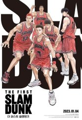
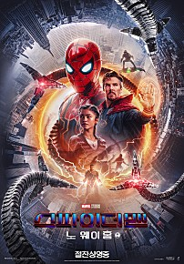

인생 영화 BEST 5
| 순위 | 제목 | 포스터 | 줄거리 | 바로가기 |
|---|---|---|---|---|
| 1 | 더 퍼스트 슬램덩크 |  | 전국 제패를 꿈꾸는 북산고 농구부 5인방의 꿈과 열정, 멈추지 않는 도전을 그린 영화 | 네이버 영화 바로가기 |
| 2 | 탑건: 매버릭 |
한순간의 실수도 용납되지 않는 하늘 위, 가장 압도적인 비행이 시작된다! |
네이버 영화 바로가기 | |
| 3 | 어벤져스: 엔드게임 |

|
인피니티 워 이후 절반만 살아남은 지구 마지막 희망이 된 어벤져스 먼저 떠난 그들을 위해 모든 것을 걸었다! |
네이버 영화 바로가기 |
| 4 | 스파이더맨: 노 웨이 홈 |  |
‘미스테리오’의 계략으로 세상에 정체가 탄로난 스파이더맨 ‘피터 파커’는 하루 아침에 평범한 일상을 잃게 된다. 문제를 해결하기 위해 ‘닥터 스트레인지’를 찾아가 도움을 청하지만 뜻하지 않게 멀티버스가 열리면서 각기 다른 차원의 불청객들이 나타난다. ‘닥터 옥토퍼스’를 비롯해 스파이더맨에게 깊은 원한을 가진 숙적들의 강력한 공격에 ‘피터 파커’는 사상 최악의 위기를 맞게 되는데… |
네이버 영화 바로가기 |
| 5 | 트루먼 쇼 |
가족, 친구, 회사… 하나부터 열까지 모든 것이 가짜인 ‘트루먼 쇼’ 과연 트루먼은 진짜 인생을 찾을 수 있을까? |
네이버 영화 바로가기 |